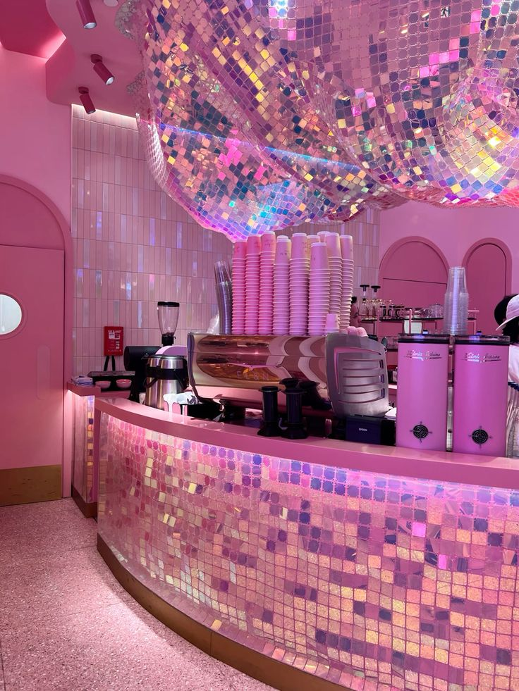

Spotted: Un plat en vue ?

Présentation
Le repaire confidentiel où la gourmandise flirte avec l'interdit. Chez Sip & Spill, nous croyons que chaque cocktail mérite sa confession et que chaque dessert doit être aussi croustillant que les dernières rumeurs. Installez-vous, le spectacle est dans la salle, mais le plaisir est définitivement dans l'assiette.
Plat Du Jour
Découvrez notre plat du jour, concocté avec amour et une pincée de mystère.
Les Favoris de l'Upper East Side
Avocado Toast "Spotted"
Le favori de B.W., avec une pincée de piment.